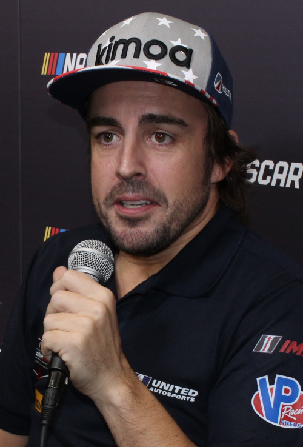
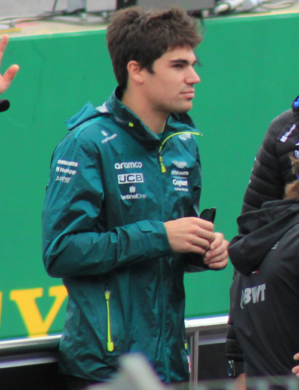

História
A Aston Martin está atualmente envolvida na Fórmula 1 como equipe e construtor sob o nome Aston Martin Aramco Cognizant Formula One Team. A equipe está sediada em Silverstone, Reino Unido. A Aston Martin competiu em algumas corridas de Fórmula 1 como construtor entre as temporadas de 1959 e 1960, fornecendo carros para a equipe da David Brown Corporation, porém a fabricante se retirou da categoria sem conseguir marcar nenhum ponto.
A marca Aston Martin retornou para a Fórmula 1 na temporada de 2018 como patrocinador título da equipe Red Bull Racing. Em 31 de janeiro de 2020, foi confirmado que a Aston Martin retornaria a maior categoria do automobilismo mundial como construtor e equipe em 2021, quando a equipe Racing Point foi rebatizada para Aston Martin. A mudança de nome foi em razão do coproprietário da equipe, Lawrence Stroll, ter se tornado acionista da fabricante britânica de carros de luxo.
Pilotos
-
Fernando Alonso
- Nacionalidade: Espanha
- Idade: 41 anos
- Corridas: 366
- Vitórias: 32
- Pódios: 104
- Campeão: 2 vezes
-
Lance Stroll
- Nacionalidade: Canadá
- Idade: 24 anos
- Corridas: 130
- Vitórias: 0
- Pódios: 3
- Campeão: 0 vez
*Dados do dia 26/06/2023